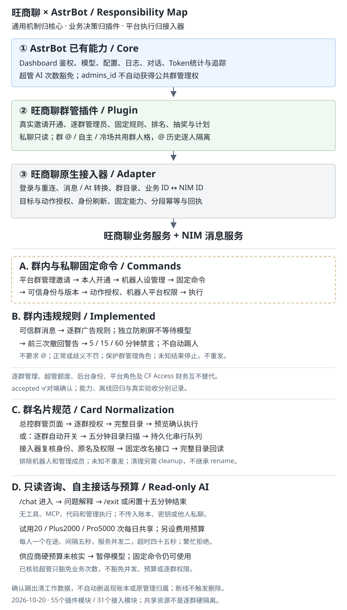

全部旺商聊私信入口退役：菜单、选群、好友自动审批与欢迎、个人知识、专属客服、 私信AI、管理员私信指引、私信财务及图片录入均不再属于可执行能力。 历史会话、知识、邀请、账本、付款与审计保留；旧角色和资料不授予现在的权限。 旧入口映射见入门指南，固定流程见命令树。 本次退役、禁言优先及防袭群仍待集成加载；防袭群缺省关闭，不宣称完整实群验收通过。
| 主体／层 | 保留的职责 | 不授予的权限 |
|---|---|---|
| 普通成员 | 本群公开帮助、排名、邀请活动查询及报名 | 名单管理、私信功能、后台登录或个人财务公开查询 |
| 服务端单独授权的专门汇报成员 | 指定机器人和群内真实@成员 禁言128，1至4320整分钟，最多3天 |
踢人、解禁、名单、规则、财务和后台；管理身份或汇报名单本身不授此权 |
| 本群获授权原生群主／管理员 | 当前群固定规则、真实@／可信回复名单、活动与定时命令 | 其他群、全局后台、群AI模型／人格／工具与群知识写入 |
| 已有相应后台权限者 | WebUI规则、名单、关键词及定时图片、活动与邀请记账／结账 | AI代确认、自动付款、跳过原生角色／版本／生命周期核验 |
| 服务端群AI配置 | 同账号同群模型、人格、工具、主题、时段、模式及群知识 | 私信咨询、个人知识、工具／技能／全局历史继承或管理执行 |
| 原生接入器 | 最后提交前核权、可信身份、幂等及独立回执 | 按昵称猜身份、未知重试、仅凭文档或admins_id授权 |
command_capabilities.py仅声明现行群命令；服务端专属项没有聊天执行位置，
私信专属命令从活动声明排除，不以retired=true留在执行目录。
conversation_guidance.py只生成群与WebUI手册；兼容导出不恢复私信路由。
群AI不继承工具、技能、全局历史或后台权限；AI只解释，不执行、保存或代确认。
群内真实@白名单直接添加，真实@／可信回复黑名单立即按已确认时长禁言，不踢人；
群内解除黑名单移出并解禁、分别反馈，后台移除只移出。详见命令树。
raid.py在原私有审核库持久保存观察、入群轮次、短禁言意图及独立回执；
raid_defense.py只从可信真实入群开始观察，接收线程仅同步计数，不下载图片或等待OCR。
有界优先工作通道进行完整目录核验和原生动作，提交前重复核权；黑名单和受保护身份优先。
开关缺省关闭，规则页保存与提前结束各需本人预览确认；不踢人、不推断跨账号身份、
不改变普通警告循环。旧「防刷屏」入口不变，新增独立「防袭群」开关及状态区。
受控验收预检 test_raid.py只检查测试群两名目标是否真实普通成员，不产生处罚许可。
当前测试群主不能作为目标，完整实群验收、生产六群开启及手机显示均未通过。
专门发言汇报由speech_activity.py聚合指定成员有效发言，只读现有同群记录，
本身不授予名单或管理权限。独立delegated_mutes.py读取服务端明确的禁言专属授权，
与当前汇报范围取交集；仅禁言当前群真实单一@目标，不能继承踢人或其他管理能力。
有效豁免、黑名单和已有禁言保护、提交前重新核权及独立回执保留。
图片识别、抽奖时间及金额校验模块已补进中英文架构表；
这些资料更新不构成生产启用或真实处罚证据。
同步日期：2026-10-22（北京时间）。适用于 wangshangliao_open.mode=integrated 的公共合并模式。
后台入口为「插件 → 旺商聊群管 → 旺商聊管理」，账号登录仍在「机器人」。
页面「架构表」「权限表」的数据源是
dashboard/plugin-pages/wangshangliao/reference-tables.json。
这份文档说明实现边界，不代表全部真实验收通过；证据见
历史验收与追加证据及当前测试入口。
该日期插件有 71个顶层Python源码模块，原生接入目录另有 31个顶层Python模块； 管理页架构表将这些职责归入 25个分区，分区不是独立进程或独立插件。 测试辅助模块、只拒绝执行的兼容壳也计入源码数量，但不属于向用户开放的功能。 架构表现已列全71个插件及31个原生接入源码模块，回归测试比较两个目录与文件映射， 新增或移除模块时须同步维护。权限表区分七类角色和40项功能。
最终离线回归7392项通过、52项跳过、0失败；2026-10-22 03:56:52（北京时间） 获授权后完整重启AstrBot，已加载三类媒体解析和以下修复，不等于实群处罚验收。 小满、林夕在线，原停用账号和群AI开关不变，独立结账服务未重启。 主配置只自动补登3个停用Telethon条目；财务库只新增启动审计，业务账表未变。 详见维护记录。
content_rules.py要求原始入站账本与当前载荷的_media_revision均匹配当前群规则版本；
拆分广告在有界证据内按原生发送时间判断先后，避免乱序入库误关联。group_ai.py在工具续调与投递前检查原生会话快照；
续调已发出但结果未知时锁定model_result_unknown，不自动再次调用。private_batches.py在身份核验等待前冻结账号守卫及会话代次，等待后复核取消／切换状态。native_conversations.py在读取后复核当前会话ID，仍不等于检查／更新的原子比较交换。member_whitelist.py先运行authority_guard()，再将持久层租户与原完整快照比较，
不一致拒绝tenant_changed；入写前、事务提交前复用同一守卫，已纳入最终回归及重启加载。此前五路模块扫描及文档阶段未重启服务、发送测试消息、调用模型或修改账本／开关。
随后用户授权「加载核实」，2026-10-20 09:47:09 UTC（北京时间17:47:09）
仅完整重启astrbot.service，PID由2490557变为772193，NRestarts=0；
独立结账服务PID212703未变。经测试的管理页产物已原子发布，新标签现已部署。
加载后大蛤账号43506527在线，9个已启用平台运行。
群1516387的群AI配置为version 5，enabled=false、mentions=false、
autonomous=false、idle=false；早先开启快照及同日15:47:56北京时间的自主回复受理／
原生对话证据仅为历史，不代表当前开关或新版本实群／手机显示验收。
DeepSeek现行模型／凭证绑定已确认有限供应商额度元数据及本地保护，
没有通过实际耗尽供应商额度验证拒绝边界；其他绑定不继承本次确认。
本批群@改走群配置、按接入实例／账号／群／核验成员UID及NIM隔离历史、群输出去前缀的变更， 已随上述完整后端重启加载，非插件热重载；静态教程更新本身不激活后端，也不改变群AI开关。 本次没有发送测试消息或调用模型，不能用重启或旧自主回复证据替代新版本实群验收。
2026-10-20 09:49:14 UTC（北京时间17:49:14）部署后核对：
受保护指纹与加载前149a44e0f399add009c69d9c027fbf2b95314a7242d69130ed0a71d749bbe8a1完全一致，
群AI稳定行、全部ai_profiles行、9个已启用平台的运行／连接状态及重启前后后端源码SHA均一致；
队列pending=0、rejected=0、review=[]，管理页SHA与待发布产物一致。
真实管理页等待成员名单响应200后，390／1440px无JS错误、溢出或浏览器写入尝试，
启动日志110行无ERROR／traceback标记。
证据见/opt/backups/wsl-load-20261020-78MTwE/的before.json、after.json及browser.json。
原生actions.py曾强制warning使用auto_recall=False并接受调用方userName／ID标签。
新实现只用本账号本群权威完整成员名单精确匹配UID／NIM后的真昵称作原生@；
身份已核验但缺昵称则仅发正文，不使用不透明ID作@，身份冲突仍停止发送。
auto_recall=True按实际发送回执安排12秒撤回，不补发历史警告或重放旧处罚。
该原生修正已随上述共享AstrBot完整重启加载，非插件重载；加载阶段未发送真实警告。
随后群1459282复用群主31846829、机器人43506527、测试发送者23691273三条在线连接，
通过隔离test_advertising完成3次真实警告。两个fixture分别为1次、2次，不是同轮完整三级升级。
原生userNick的@大蛤与目标身份核对正确，groupMemberNick=testfork不覆盖该昵称；
违规原消息撤回、警告接收及警告自撤回均有对端原生证据，作者／执行人也与本地回执核对。
三次警告受理至对端撤回通知分别12.112／12.115／12.125秒，不是手机实际消失时间。
规则和接收机器人的临时管理员角色恢复为原普通成员，窗口关闭；
正式群、财务及正常处罚计数未变，原生回执与最小审计保留。实测0模型调用、无额外NIM连接、
未重启服务；只验收昵称与警告撤回，未测禁言升级、全功能或手机画面。
证据为/opt/backups/wsl-warning-live-20261020-I5Z5qf/result.json，
首轮脚本哈希误解析的只读恢复及未重发说明见测试与验收。
619项通过是缺昵称回退细化前的测试结果，不等于最终版本或手机显示通过；历史审计日期和发现保留。
后续最终离线回归已由六个互不重叠批次全部完成：a-b、c、d-f、g-m、n-r、s-z。
/opt/backups/wsl-resume-20261020-YN7uIb/regression-{range}.xml聚合为6481个唯一用例：
6429项通过、52项条件跳过、0失败、0错误；文件范围完整匹配tests/test_wangshangliao*.py及
tests/test_wsl*.py，无重复用例。此前单进程运行因SIGTERM（退出码143）中止，不计为通过，也不计入该汇总。
这仅证明离线回归结果，不替代随后限定范围的三次警告实测；
不能扩大为群AI、禁言升级、全功能或手机显示验收，也不据此消除其他审计发现。
重启后离线专项actions、reply_recall、group_ai、native_conversations再跑308项通过，
耗时14.07秒，证据为部署备份中的focused-regression.xml。自09:47:09 UTC起的原生只读回执
观察当时为0条新撤回意图、0条待处理，因此该加载时点不是警告实测证据；
后续三次原生实测单独留证，不改写当时的零记录。
本轮仅合并原生event.py三个等价回复调用、policy.py三类关键词的相同校验，
并删除cashback_store.py未使用私有旧头像定价迁移函数；原有参数语义、边界和错误码不变。
三份生产代码净减66行，不执行迁移、不清理数据库、不改历史财务行；模块数量和权限表不变。
新增110项回归，完整相关离线6564通过、52条件跳过、3 warnings，耗时237.65秒，
证据/opt/backups/wsl-cleanup-20261020-IsoIYB/full-regression.xml。
此轮只整理源码与重建发布文档，不重载／重启、不发消息；不能用离线通过宣称运行进程已加载清理。
较早6429／52及308结果保留其轮次范围，专项527／81／192有重叠，不累加为唯一总数。
以下2026-10-19内容是当时的源码与隔离测试校准，不单独证明正在运行的进程已加载全部修复。 涉及原生接收和执行的变更须在维护窗口统一重启，并在受控群复验；不自动启用正式群， 不改历史金额、归属或付款记录，也不自动解除公共AI供应商预算门禁。
当前使用已有 AstrBot 进程和已登录账号，不恢复独立公共机器人进程。 原生接入器负责认证、传输、身份与平台执行；插件负责开通、权限、规则及任务； 独立结账进程仍与公共群管分开。
旧独立公共进程的 Socket、启动／安装脚本及后台网络回退已停用。
open-service 保留后台鉴权、版本和操作白名单，仅在当前进程内分发；
旧入口返回明确停用提示，不连接旧进程。此变更不关闭财务结账 Socket。
退役模式的登录、独立密钥保存和全局管理员写入执行体已删除，兼容入口仍明确拒绝执行。
活动邀请采集只使用现行可信业务证据；已移除未被调用的旧通知归属转换函数，
但保留原始入群通知、历史记录及未知操作回执，不修改已有邀请归属。
未被引用的旧 WangshangliaoCards.vue、WangshangliaoTestWindow.vue 已删除；
名片维护和受控测试仍使用管理页中的 BusinessControls.vue，入口和权限不变。
页面发布还须对打包后的 index.html 运行AI控件浏览器回归，不能只检查Vue源码。
2026-10-19发现并替换了缺少自主接话开关与低／中／高预设的旧构建；
临时目录构建、验证后仅替换入口HTML，不清空教程，不修改已保存的群或AI配置。

总控暂停开放服务时，open_store.py在同一事务内作废尚未使用的聊天管理员变更确认。
恢复服务后必须重新预览；总控后台独立授权的恢复操作不受该聊天确认作废影响。
| 目录／资料 | 维护内容 |
|---|---|
astrbot/core/platform/sources/wangshangliao/ |
登录、传输、真实身份、最终平台动作及持久收发 |
astrbot/builtin_stars/wangshangliao_moderation/ |
群开通、规则、活动、权限、财务接口；main.py不实例化旧AI配置器 |
dashboard/plugin-pages/wangshangliao/ |
当前管理页面；架构权限JSON是静态职责对照，不是实时授权来源 |
docs/zh/platform/、docs/en/platform/ |
当前双语指南及按日期保留的历史证据 |
scripts/、tests/ |
风险分类工具及回归；不属于公共业务入口 |
ai_config.py只保留明确拒绝的导入兼容壳，不保留旧自然语言写入实现。
旧一次性合并器和绑定废弃群的名片实测脚本已删除；仍被回归或维护流程引用的工具
不以“旧文件”为由删除。架构截图仅可作历史外观参考，以此表和页面JSON为准。
“本群管理员”指机器人业务授权，不等于旺商聊平台管理员。 首次开通邀请者必须具备平台群主／管理员角色；之后新增业务管理员也只能选择已核验的平台群主／管理员，普通成员不列入候选。 网页和聊天均在提交时复查该身份；移除旧授权仍走独立确认，不自动授予平台管理权。 “允许”只说明入口可用，还需运行开关、完整身份、动作授权、机器人平台权限及成功回执。 当前角色表见本文开头。旧私信财务或客服身份没有后台替代授权。
群目录核验和分页按当前可信完整快照，不因开通码绕过来源；开通码不能绕过真实邀请来源。 试用每天20次，站点默认保护100000次／日；次数仍受费用与当前权限共同约束。 每账号普通消息积压最多4096，满载直接拒绝，不无限排队。 旧私聊256条、同发送者4条上限仅解释历史；私信退役不把这些数字改称群通道限额。 单次固定调用按既有更短期限处理，AI整轮45秒；自主上下文最多12条／120秒，不混入个人历史。 消息／规则工作与数据库访问不阻塞接收；未知操作不因30秒刷新或重启重放。 普通离群清理不触发删除财务资料，不自动删除返现账本；审计按既有90天口径保留。 这些边界和离线回归不代表全部真实验收，防袭群完整实群验收仍未通过。
普通退群重入始终保留原管理归属。2026-10-16用户特别授权的旧测试群归零是独立运维例外，
并未将自动离群清理改成删除授权。工具只清大蛤账号在1459282的授权／工作数据，
保留原审计、退役标记、未知回执、林夕同群状态和全部财务；先一致性备份，
再按预览绑定的版本、入群代次、命名空间和完整行指纹执行。
必须停止AstrBot及结账服务以消除轮询／缓存回写，插件停用不能替代这一条件。
详见测试与验收。
结果固定标记reset_existing_group=true、genuinely_new_group=false；
备份回执/opt/backups/wsl-test-reset-20261016/completion.json为reset_complete，
只证明重置完成。后续重新邀请已接受，但不凭此宣称开通、全新群首次邀请或整体实测通过。
单次开通支持工具scripts/check_wsl_test_activation_live.py仅供本地运维显式执行：
固定林夕向测试群发送一次开通，经既有后台停用并确认原连接关闭后借用原NIM会话，
临时连接关闭后恢复原状态。持久化意图禁止未知重放；不新增生产接口、不直接改授权，
不把机器人普通成员状态说成已有平台管理权。
关闭证据兼容systemd字符串及UTF-8字节数组，并清理ANSI后核验实例和本次时间。
显式--retry-not-sent只允许最后一条not_sent / verified且原outbox为空的尝试，
重新验证当前邀请后新建关联记录，保留原尝试／回执；任何已发送或未知状态不得重放。
已核验退群通知属于持久安全元数据，重置也须保留；邀请代次按生产
prove_inviter的已确认退群边界判定，不能把通知延迟当成旧邀请。
2026-10-16修复了测试重置误删此证据的问题，原三条记录由脱机备份精确恢复，
审计见/opt/backups/wsl-release-20261016-before/fence-recovery.json。
Pair的test_native是另一项本地测试原语，只限大蛤、测试群及固定普通成员，
复用持久化执行器、权限复核、3.2秒HTTP间隔和30秒动作间隔。
它不恢复已退役的聊天禁言，也不注册公共接口、AI或MCP能力；实网结果须另行验收。
权限不只在收到命令时检查：数据库等待、共享 HTTP 锁、发送锁及每个消息分片之后， 真正提交之前还会重新核验。暂停、离群、撤权、原生权限或规则版本变化会阻断尚未提交的动作。 关闭广告审核不会因为防刷屏仍开启而继续执行旧广告处罚；活动发布持续绑定创建者权限。 明确未发出的权限／本地编码失败记录为失败，实际发出后无法确认才记录为结果不明； 历史未知记录不批量清除，也不自动重放。
平台的邀请申请时间可能早于实际入群通知。存在同账号、同群且已确认的离群记录时，
最新可信邀请必须晚于该离群记录，不再单凭120秒通知窗口拒绝合格邀请者；
没有已确认离群依据时仍保留原窗口，不能用其他账号、其他群或未确认通知放宽。
这项修复不直接开通群，也不自动授予管理权，仍需邀请者发送开通及当前身份复核。
以下是待实施设计，不代表当前已经运行；不引入MaiBot进程、额外规划模型或自动训练。
| 借鉴点 | 在当前架构中的实现方式 | 资源与权限边界 |
|---|---|---|
| 随群活跃度调频 | 每群只记最近60秒内最多64个消息时间点；普通聊天沿用至少60秒间隔，密集聊天延长到120秒；模型连续选择静默时按120／240／480／600秒退避 | 本地判断，不增加模型请求；@开关及每人@历史保持独立，仍使用同一群人格；审核命中不计入活跃度 |
| 话题连续性 | 沿用12条／120秒上下文，再保留机器人上一次成功发言的短文本及原生消息锚点；只在同一短期会话内续接，过期或连续静默后放下话题 | 不创建长期记忆，不额外调用摘要模型；暂停、离群、配置修改时清空；引用仍只使用未撤回的真实来源 |
| 审核过的表达 | 第一阶段复用本群知识库和已有人格预设对话，由授权管理手动录入与确认表达示例；只作为语言素材，不作为操作指令 | 不自动抓取群员聊天，不跨群共享，不覆盖全局人格；沿用容量、版本和撤权检查；自动候选采集需另行设计和授权 |
建议先交付前两项并观察静默率、实际发言间隔和费用，再评估是否需要自动收集表达候选。 “是否发言”的模型请求即使选择静默也有费用，调频的目标是减少无效判断，而不是提高发言量。
原生互引的受控工具为open-service固定动作test_quotes及
scripts/check_wsl_quotes_live.py：仅测试群1459282与现有三个账号，
三条原消息加六个引用方向，每次至少3秒，复用已登录连接，不授予管理权限或修改群开关。
后台只接受本次操作标识和固定步骤，不接受任意内容、群号、账号或方法。
每条必须由另外两个连接独立解码核对301字段中的原消息编号、客户端编号和正文；
NIM29—38附加路由仅在平台回传时比对。2026-10-19实测平台省略这些可选字段，
证据单独记录其是否存在，不能把省略误报为引用失败。未知回执或缺少证据即停止，
重复步骤只查询原结果。结束关闭原测试窗口，不关闭后来被替换的窗口。
2026-10-19已通过三个账号的九条消息实测，六个互引方向均取得另外两个连接的独立回执；
未增加原生登录、未修改群权限或财务，测试窗口已关闭。
这证明原生协议互引，不等于手机界面截图或自主AI真实调用已经验收。
ai_plans.py使用同一SQLite事务保存ai_pools、ai_subscriptions、ai_payers、
ai_charges、ai_prices、ai_plan_previews和ai_quota_notices。
试用每天20次、每自然月3元；Plus／Pro均30天，当前实收134／335元的70%为93.80／234.50元。
免费试用另受全站每自然月20元的共享免费池限制；付费周期费用独立，不占用免费池。
全站安全总上限为后台“安全基础预算”加本北京时间月内重叠的已授予付费周期成本预算。
基础预算为0仍关闭所有调用；设置免费池为0仅停止试用，不停止付费。
付费跨月不会重置个人周期预算，升级结束的旧周期及其未知费用仍计入相应月份。
调用预留时保存不可变的免费／付费分类，后续升级或到期不挪动旧费用；
旧记录仅凭原周期证据分类，无法核验的历史占用仅计入全站保护，不猜测归属。
后台记录实际人民币收入，不获取汇率或接入支付，不追改已生效周期。
同档续期排后；升级立即开启新周期，结束旧正在运行周期，不退款折算，未开始的已付费续期顺延保留。
到期回试用，当日已用不清零。原manager_quota写接口停用，历史记录不自动变成订单。
套餐查询与状态页使用一致性只读事务，已有额度池不申请写锁；首次建池或可信身份 合并仅使用短写事务，随后重新读取并核验身份。状态页批量汇总共享池，全站当月费用 只汇总一次，不把页面结果缓存为调用准入依据。在途和冷却检查先于费用汇总， 次数、费用、权限及预留提交仍在同一原子写事务内复核。
账本保留新鲜鉴权和单次查询快照；按结账状态的部分索引减少整群扫描，新索引迁移时
为已有记录更新查询统计。页面按记录分别取最后一次核验周期日志及付款日志，
避免读取全部旧日志。已结账展示可在每条独占借用的只读连接中复用一个页面，
最多四条空闲连接、最长三十秒；筛选条件或 SQLite data_version 变化立即失效。
每次命中仍在新事务中读取登录身份、权限和群配置，并在权限读取前后检查数据版本；
未来邀请证据达到可见时间时提前过期，返回独立副本，避免调用者修改共享展示。
待结账及其他未付款资格、修改预览和付款提交均不使用页面缓存，不减少邀请和
入退群证据核验。宽行查询只做一次列名到字典转换，不重复复制整行。
旺商聊适配器及群管使用AstrBot自带日志体系。独立结账服务的HTTP异常、
异步任务和进程启动错误，通过现有同属主、权限为0600的财务Unix Socket，
转交AstrBot的logger，统一进入后台实时日志及已配置的日志文件。
/v1/diagnostics仅接收版本化固定字段，不接收任意日志正文、请求头、
Cookie、Token、请求URL或异常堆栈；不授予财务操作权限，不增加公网入口。
发送端最多缓存128条、单批最多16条，异步转发不等待结账请求； 接收端限制每秒64条。超载汇总计数，失败或结果不明不重试， AstrBot不可用时仅将脱敏记录留在systemd日志，不写第二套日志文件。 进程被强制终止、内核及systemd自身错误仍需查看系统日志，不能保证进入后台。 账本、授权、套餐及付款审计仍独立保存在原数据库，不以运行日志替代或清空。
本地root测试／维护CLI导入AstrBot前，用单命令前缀
env ASTRBOT_DISABLE_FILE_LOGGING=1关闭该进程初始化的文件日志接收器；
仍使用AstrBot同一logger和控制台，不是第二套日志，也不改变服务端日志配置。
不全局设置此变量。否则root可能新建应用属主不可写的trace文件，阻止服务重启；
2026-10-16已实际出现此故障，原失败历史保留，仅定向修复两份测试日志属主及0600权限。
灰度记录初始NRestarts并检查增量为零，不清除历史失败计数。
配置与人格引用、模型凭证、检索分词、日志、对话、统计和追踪均复用AstrBot原生对象。 群知识仍负责独立归属、容量和版本检查；共享套餐及费用预留、财务事务、 固定定时禁言仍负责本领域的逐群权限与执行回执，不改为有任意代码／工具权限的Agent任务。
已有受控群实测覆盖关键词、前三次警告、5／15／60分钟禁言、防刷屏整批撤回、 公告、名片、全员禁言、分钟边界定时、抽奖和管理员确认／撤权保护。 普通成员邀请后的自动退群已由用户确认；群内开通拒绝回复已有原生历史回读证据。
手机自动撤回画面已由用户于2026-10-15确认正常，区别于手动撤回通知或仅平台回读。
独立费用测试四次共15777tokens，供应商账单倍率0.25匹配实际扣费0.0045556875U，
但账户标记为unrestricted，不能据此认定硬预算已通过。
历史重构过程见架构收敛，不应用旧AI工具和旧授权说明推断当前权限。
以下保留2026-10-20源码／隔离复现发现，不表示线上已经发生； 2026-10-21仅补充过期脚本退役状态，其余发现不因文档更新或测试通过而视为已修复。 2026-10-22追加源码边界见上方；本表保留原轮次发现与结论，不作为本轮重新复现或验收结果。 P1优先于扩大灰度，P2需补专门交错或失败路径回归。各模块文档保留复现边界及操作注意事项。 其中网页风控切群和内嵌解除缺少生命周期守卫两项已在本轮结账合并中修复并补回归， 详见上方新入口与维护记录；下表仍保留原始发现，其余缺口不因此关闭。